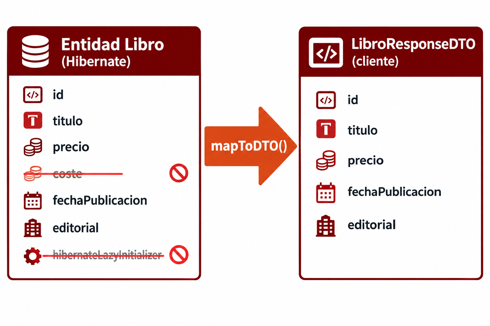

🧩 3. Operaciones CRUD y gestión de transacciones¶
Descarga de diapositivas
Ya sabes por qué hacen falta conectores y cómo se declara la estructura de una base de datos desde Java. Toca el paso siguiente: cómo se modifican y consultan los datos desde una aplicación real. Vas a construir el CRUD de Libro igual que lo harías tú solo — empezando por la versión más simple, tropezando con sus problemas, y resolviéndolos uno a uno — hasta llegar al mismo código que vas a escribir en la Actividad 1.2.
🔤 Qué es CRUD¶
CRUD son las siglas de las cuatro operaciones universales sobre datos: Create, Read, Update, Delete. Ya conoces su versión en SQL. HTTP expresa esas mismas intenciones sobre recursos, tal y como se vió en PSP:
| CRUD | SQL | HTTP |
|---|---|---|
| Create | INSERT |
POST |
| Read | SELECT |
GET |
| Update | UPDATE |
PUT para reemplazo completo; PATCH para actualización parcial |
| Delete | DELETE |
DELETE |
REST está pensado precisamente para modelar estas operaciones sobre recursos utilizando los verbos que HTTP ya trae de fábrica, en vez de inventar una ruta distinta para cada acción —algo como /libros/crear sería el estilo antiguo, no REST—.
🗄️ La primera pieza: el repository¶
Antes de leer nada necesitas la pieza de la arquitectura en capas (Controller → Service → Repository) que todavía no has visto declarada: el repository, quien de verdad habla con la base de datos.
Con JDBC "a pelo" (lo verás en detalle un par de apartados más adelante), escribir un repository significa escribir tú mismo cada consulta SQL, abrir la conexión, recorrer el resultado fila a fila y cerrarlo todo — para cada entidad, para cada operación. Con Spring Data JPA ese trabajo desaparece casi por completo: declaras una interfaz vacía, sin ningún método escrito, y Spring te da una implementación real ya funcionando.
| Java | |
|---|---|
Qué significa exactamente extends JpaRepository<Libro, Long>¶
JpaRepository<T, ID> es una interfaz que trae Spring Data JPA, con dos parámetros de tipo entre < > — como los de List<String> o Optional<Libro>, que ya conoces:
T: la entidad que gestiona este repository — aquí,Libro.ID: el tipo de la clave primaria de esa entidad — el mismo tipo que le has puesto al campo anotado con@Iden el apartado anterior (en este curso, siempreLong).
JpaRepository no está vacía: por dentro, ya trae declarados decenas de métodos — findAll(), findById(id), save(entidad), deleteById(id)... Cuando escribes interface LibroRepository extends JpaRepository<Libro, Long> {}, LibroRepository hereda todos esos métodos automáticamente, ya especializados para Libro, aunque tú no escribas ni una línea dentro de las llaves.
¿Cómo puede funcionar una interfaz sin implementación?
Una interfaz normal, con métodos sin cuerpo, no se puede usar directamente — tendrías que implementarla tú. Aquí no hace falta: Spring Data JPA, al arrancar la aplicación, genera una clase real que implementa LibroRepository por completo (con código que traduce cada método a SQL de verdad contra tu tabla libro) y la registra como un bean, igual que los beans @Service/@Repository que ya conoces. Tú nunca ves esa clase generada ni la escribes — solo inyectas la interfaz, como si la implementación ya existiera desde siempre.
Lo que ya tienes disponible, sin escribir nada¶
| Método | Qué hace | Ejemplo |
|---|---|---|
List<Libro> findAll() |
Devuelve todas las filas de la tabla libro, como una lista de entidades. |
libroRepository.findAll() |
Optional<Libro> findById(Long id) |
Busca una fila por su clave primaria. Puede no encontrar nada — por eso no devuelve un Libro directamente. |
libroRepository.findById(3L) |
Libro save(Libro libro) |
Inserta el libro si su id es null, o lo actualiza si ya existe — la misma llamada sirve para crear y para modificar. |
libroRepository.save(libro) |
boolean existsById(Long id) |
Comprueba si existe una fila con ese id, sin cargar la entidad entera — más barato que un findById cuando solo necesitas saber si está. |
libroRepository.existsById(3L) |
void deleteById(Long id) |
Borra la fila con ese id. |
libroRepository.deleteById(3L) |
long count() |
Cuenta cuántas filas hay en la tabla. | libroRepository.count() |
Fíjate en findById: no devuelve un Libro, devuelve un Optional<Libro>. Un Optional es un envoltorio que representa "puede que haya un valor, puede que no" — en vez de devolver directamente el libro (y arriesgarte a un NullPointerException si no existe) o null (que es fácil de olvidar comprobar), findById te obliga a decidir explícitamente qué hacer en el caso "no encontrado". Vas a ver ese patrón constantemente a partir de aquí:
| Java | |
|---|---|
orElseThrow(...) dice, en una línea: "si el Optional trae un libro, dámelo; si viene vacío, lanza esta excepción en su lugar". En Programación de Servicios y Procesos has resuelto el caso "recurso no encontrado" con un if explícito comprobando null — esto es la versión más directa de esa misma idea, apoyada en que findById ya te avisa con un Optional vacío en vez de con un null a pelo.
Y si necesitas una consulta que no viene de fábrica¶
findAll/findById/save... cubren lo genérico, pero ¿y si necesitas "todos los libros de una editorial concreta"? No hace falta escribir SQL a mano ni implementar nada: declaras el método en la interfaz, sin cuerpo, siguiendo un patrón de nombre:
| Java | |
|---|---|
Spring Data JPA lee el nombre del método al arrancar la aplicación, lo descompone (find + By + EditorialId) y genera la consulta él solo — el EditorialId del nombre tiene que coincidir con un campo real de Libro (aquí, la relación editorial, a través de su id). El resultado equivale a:
| SQL | |
|---|---|
La convención admite más piezas combinables, todas sin escribir una sola consulta:
| Patrón | Ejemplo | Equivale a |
|---|---|---|
findByX |
findByTitulo(String titulo) |
WHERE titulo = ? |
findByXAndY |
findByTituloAndPrecioLessThan(String t, BigDecimal p) |
WHERE titulo = ? AND precio < ? |
findByXOrderByY |
findByEditorialIdOrderByPrecioDesc(Long id) |
WHERE editorial_id = ? ORDER BY precio DESC |
existsByX |
existsByTitulo(String titulo) |
igual que findByX, pero devuelve boolean |
countByX |
countByEditorialId(Long id) |
igual, pero devuelve long |
Cuidado con los límites de esta convención
Es cómoda para consultas simples y fijas. Si necesitas filtros que cambian según el caso (a veces por título, a veces por precio, a veces ambos) o consultas más elaboradas, esta convención se queda corta — para eso están las Specifications (filtros dinámicos) y @Query con JPQL, que verás más adelante en este mismo tema.
El CRUD que vas a construir en este apartado no necesita ninguna consulta personalizada todavía — findAll/findById/save/deleteById bastan. Declara LibroRepository y EditorialRepository vacías, sabiendo ya cómo añadirles un método propio el día que lo necesites:
| Java | |
|---|---|
Con las dos interfaces declaradas, tienes las tres capas listas para empezar: Controller recibe la petición HTTP, Service decide qué hacer, Repository habla con la base de datos. Vas a construir las tres, una encima de otra, empezando por la lectura.
📖 Primer intento: leer y devolver la entidad tal cual¶
La forma más directa de exponer un libro por HTTP es la que probablemente se te ocurriría a ti solo: el controller le pide al service el libro, el service se lo pide al repository, y todo el mundo se pasa el mismo objeto Libro:
| Java | |
|---|---|
De momento, quédate con una idea sencilla sobre @Transactional(readOnly = true): indica que este método trabaja con la base de datos únicamente para consultar, sin intención de modificarla. Más abajo verás qué significa exactamente una transacción y qué aporta la opción readOnly.
Ahora fíjate en la forma: el controller no toca el repository directamente, solo habla con el service; el service es quien de verdad llama a libroRepository.findById(...). Ese orden (Controller → Service → Repository, cada uno hablando solo con el siguiente) no cambia en todo lo que viene a continuación — lo único que cambia es lo que circula por esas capas.
Compila, funciona, y GET /api/v1/libros/3 te devuelve algo así:
| JSON | |
|---|---|
❌ El problema: la entidad expone más de lo que quieres¶
Mira otra vez esa respuesta. Dos cosas no deberían estar ahí:
| Campo | Por qué es un problema |
|---|---|
coste |
El precio al que tu librería compra el libro al proveedor — un dato interno, de gestión, que jamás debería llegar a un cliente de la API. Imagina que fuera un margen de beneficio, o directamente una contraseña: el problema es el mismo — cualquier campo private de la entidad viaja tal cual al JSON, lo quieras exponer o no. |
hibernateLazyInitializer |
Un detalle interno de cómo Hibernate representa la relación @ManyToOne con carga lazy que has visto en el apartado anterior, filtrado sin querer al convertir el objeto a JSON. |
El problema de fondo es siempre el mismo: la entidad Libro está diseñada para que Hibernate la entienda, no para que la vea un cliente HTTP. Son dos propósitos distintos, y una sola clase no puede servir bien a los dos a la vez.
📦 La solución: DTOs¶
Un DTO (Data Transfer Object, objeto de transferencia de datos) es un objeto hecho a medida de lo que sale (o entra) de tu aplicación — distinto de la entidad interna. En vez de devolver Libro tal cual, defines una clase nueva con exactamente los campos que quieres exponer, ni uno más.
Antes de escribirlo, una construcción del lenguaje que encaja perfectamente aquí: el record (desde Java 16). Un record declara, en una sola línea, una clase inmutable pensada exactamente para "llevar datos de un sitio a otro":
| Java | |
|---|---|
Con esa única línea, el compilador genera automáticamente un constructor que recibe x e y, un getter por cada campo sin el prefijo get (punto.x(), no punto.getX()), y equals()/hashCode()/toString() coherentes. Todos los campos de un record son final por diseño — no hay setters, ni forma de cambiarlos tras construirlo. Esa inmutabilidad es justo lo que necesitas para un DTO: un objeto que representa un dato en un momento concreto, no algo que deba cambiar de estado con el tiempo.
Un record NO es lo mismo que una @Entity
Libro/Editorial siguen siendo clases normales, con @Getter/@Setter de Lombok: necesitan ser mutables (Hibernate las modifica al cargarlas y guardarlas) y tener un identificador gestionado por el framework. Un record encaja con los DTOs porque nunca necesita cambiar una vez construido. Si ves record en una clase, es un DTO; si ves @Entity, es una entidad persistente.
Con eso, el DTO de salida:
| Java | |
|---|---|
Ni rastro de coste, ni de los detalles internos de Hibernate — solo lo que quieres que vea un cliente. Ahora reescribe LibroService.findById para que, antes de devolver nada, convierta la entidad al DTO:
Fíjate en mapToDTO, porque va a reaparecer en todo lo que queda de apartado. Es private — a diferencia de findById, que es public — porque no forma parte de lo que LibroService ofrece hacia fuera: el controller no lo llama nunca, ni sabe que existe, es solo cómo LibroService traduce cada Libro (la entidad que gestiona Hibernate) al DTO que ve el cliente, campo a campo:
Campo de LibroResponseDTO |
De dónde sale |
|---|---|
id |
libro.getId() |
titulo |
libro.getTitulo() |
precio |
libro.getPrecio() |
fechaPublicacion |
libro.getFechaPublicacion() |
editorial |
Un EditorialDTO nuevo, construido aparte a partir de libro.getEditorial() — la misma traducción, un nivel más adentro |
| (no aparece) | coste no tiene fila en esta tabla: no se copia a ningún sitio, por eso desaparece del JSON — no hay ninguna regla mágica ocultándolo |

No hay ninguna librería detrás de esta conversión (existen herramientas que la automatizan, como MapStruct, pero escribirla a mano tiene la ventaja de que se ve exactamente qué campo va a parar a dónde). A partir de aquí, cualquier método de LibroService que necesite devolver un libro (findAll, create, update) va a llamar a este mismo mapToDTO en vez de repetir la traducción cada vez.
Y el controller cambia una sola palabra — el tipo que envuelve ResponseEntity:
| Java | |
|---|---|
Fíjate en que el flujo no ha cambiado: sigue siendo Controller → Service → Repository. Lo único nuevo es que el service, además de pedirle datos al repository, ahora también decide qué parte de esos datos sale de la aplicación — esa traducción es trabajo suyo, no del controller ni del repository.
✍️ Ahora la escritura: create(), y el problema de los datos basura¶
Para crear un libro necesitas un DTO de entrada — y aquí no vale reutilizar LibroResponseDTO: al crear, no tiene sentido pedir un id (todavía no existe), y si reutilizas el DTO de salida, nada te impide que alguien intente fijar el id a mano. Un primer intento, sin pensarlo mucho:
| Java | |
|---|---|
Funciona... con datos razonables. Pero nada impide mandar {"titulo": "", "precio": -5, "fechaPublicacion": "2099-01-01", "editorialId": -1} — un título vacío, un precio negativo, una fecha de publicación en el futuro. Tu aplicación lo aceptaría igual, porque create() no comprueba nada de eso.
La solución: anotaciones de Bean Validation (jakarta.validation) sobre el propio DTO, declarando la restricción justo donde vive el dato:
Falta una dependencia en el pom.xml
spring-boot-starter-webmvc no trae Bean Validation incluido — es un starter aparte. Si usas @NotBlank y otras anotaciones de Bean Validation sin haber añadido esa dependencia, el propio IDE no reconoce la anotación (no la encuentra para importar) o el proyecto falla al compilar. Añade esto al pom.xml:
| XML | |
|---|---|
Esta dependencia trae Hibernate Validator, la implementación de Bean Validation que Spring usa por debajo — sin ella, jakarta.validation.constraints (de donde vienen @NotBlank, @NotNull...) ni siquiera está en el classpath del proyecto.
| Java | |
|---|---|
Estas cuatro no son las únicas — Bean Validation trae toda una familia de anotaciones para las restricciones más habituales, todas se usan igual (sobre el campo, sin nada más que declararlas):
| Anotación | Qué exige | En este DTO |
|---|---|---|
@NotNull |
El valor no puede ser null. |
precio, fechaPublicacion, editorialId |
@NotBlank |
Además de no ser null, si es un String no puede estar vacío ni ser solo espacios. |
titulo |
@NotEmpty |
Igual que @NotBlank, pero para colecciones/arrays: no puede estar vacía. |
— |
@Size(min=, max=) |
La longitud de un String (o el tamaño de una colección) debe caer en ese rango. |
— |
@Positive / @PositiveOrZero |
El número debe ser mayor que cero / mayor o igual que cero. | editorialId / precio |
@Negative / @NegativeOrZero |
Lo mismo, en negativo. | — |
@Min(valor) / @Max(valor) |
El número no puede bajar de / superar ese valor concreto. | — |
@Past / @PastOrPresent |
La fecha debe ser anterior a ahora / anterior o igual a ahora. | fechaPublicacion |
@Future / @FutureOrPresent |
La fecha debe ser posterior a ahora / posterior o igual a ahora. | — |
@Email |
El String debe tener forma de dirección de correo. |
— |
@Pattern(regexp = ...) |
El String debe coincidir con la expresión regular dada. |
— |
Todas se pueden combinar sobre el mismo campo, como @NotNull @PositiveOrZero en precio.
Y en el controller, un único añadido delante del parámetro:
| Java | |
|---|---|
@RequestBody convierte el cuerpo JSON de la petición en un LibroCreateDTO; @Valid es lo que activa de verdad las comprobaciones — sin él, las anotaciones de arriba existirían pero nadie las miraría. Si algún campo incumple su restricción, Spring rechaza la petición con un 400 Bad Request antes de que tu código llegue a ejecutarse — create() ya ni se entera de que ha habido un intento con datos basura. Lo comprobarás en detalle en Programación de Servicios y Procesos, que profundiza en cómo se gestiona ese error.
🔄 update() y delete(): el problema del recurso que no existe¶
update() reutiliza LibroCreateDTO (pide los mismos datos que create()) y sigue un patrón parecido, con un matiz: primero tiene que cargar el libro que ya existe.
Como ya has visto en findById(), orElseThrow(...) resuelve el caso en que el Optional viene vacío. Si el libro existe, devuelve la entidad que se va a modificar; si no existe, interrumpe la petición con un 404 Not Found.
Sin esa comprobación podrías terminar intentando utilizar un valor null: el código compilaría, pero fallaría durante la ejecución al llamar a uno de sus métodos.
delete() no tiene nada que cargar ni modificar, así que usa la comprobación más ligera que ofrece el repository:
| Java | |
|---|---|
findAll() no tiene ninguno de estos problemas: una lista puede estar vacía sin que eso sea un error. Como solo consulta datos, también utiliza @Transactional(readOnly = true) y transforma cada entidad en su DTO correspondiente.
💳 Qué garantiza que estas escrituras no dejen la base de datos a medias¶
En todos los métodos anteriores has visto aparecer la anotación @Transactional, sin explicar todavía qué hace exactamente — solo se te pidió que la ignoraras por un momento. Toca explicarla.
Mira otra vez update(): hace dos lecturas (libroRepository.findById, editorialRepository.findById) y una escritura (libroRepository.save). ¿Qué pasaría si el proceso se cayera justo después de guardar el libro, pero antes de que la operación completa terminara de confirmarse?
Es el mismo problema, en miniatura, que una transferencia bancaria: restar 100€ de una cuenta y sumar 100€ a otra son dos operaciones — si el programa falla justo después de restar y antes de sumar, el dinero desaparece. Una transacción es una forma de agrupar varias operaciones para que se comporten como una sola unidad: todo o nada. Si todas terminan bien, se confirman de golpe (commit); si cualquiera falla a mitad, se deshace todo lo hecho hasta ese punto (rollback), como si nunca hubiera pasado nada.
flowchart LR
A["Empieza transacción"] --> B["Resta 100€ a A"]
B --> C["Suma 100€ a B"]
C -->|"todo bien"| D["✅ COMMIT<br/>(se confirma)"]
B -.->|"falla algo"| E["↩️ ROLLBACK<br/>(se deshace todo)"]
C -.->|"falla algo"| ELas propiedades que debe cumplir una transacción se resumen en el acrónimo ACID:
| Propiedad | Qué garantiza |
|---|---|
| Atomicidad | Se ejecuta entera, o no se ejecuta nada de ella. |
| Consistencia | La base de datos pasa de un estado válido a otro estado válido, nunca a uno a medias. |
| Aislamiento | Dos transacciones que ocurren al mismo tiempo no se interfieren entre sí. |
| Durabilidad | Una vez confirmada (commit), sobrevive aunque el sistema se caiga justo después. |
Vuelve a mirar el código de update() y delete(): los dos llevan @Transactional encima, y findById/findAll llevan @Transactional(readOnly = true). Eso es todo lo que hace falta — tú no escribes connection.commit() ni connection.rollback() en ningún sitio. Por debajo, Spring se encarga del ciclo completo de la transacción:
- Abre la transacción antes de ejecutar el método.
- Hace commit automáticamente si el método termina correctamente.
- Hace rollback si el método termina con una excepción no comprobada —una
RuntimeException— o con un error grave de la aplicación.
Las excepciones que estás utilizando en este CRUD, como ResponseStatusException, pertenecen a ese grupo. Por ejemplo, si durante update() no se encuentra la editorial indicada, se lanza la excepción y Spring deshace cualquier cambio realizado dentro de la transacción. La base de datos queda como estaba antes de comenzar la operación.
flowchart LR
A["Empieza @Transactional"] --> B["Se ejecutan las operaciones"]
B -->|"el método termina bien"| C["✅ COMMIT<br/>se confirman los cambios"]
B -->|"se lanza RuntimeException o Error"| D["↩️ ROLLBACK<br/>se deshacen los cambios"]Java también tiene excepciones comprobadas, que obligan a capturarlas o declararlas en la firma del método. Estas no provocan un rollback automático con la configuración habitual de Spring. Cuando necesitas que una de ellas también deshaga la transacción, puedes indicarlo expresamente:
| Java | |
|---|---|
No necesitarás configurar esta opción en el CRUD del curso, pero conviene saber que el rollback depende del tipo de excepción y no simplemente de que haya ocurrido cualquier error.
Contraste con lo que viene después
En el siguiente apartado (JDBC puro) utilizarás JDBC directamente y gestionarás una transacción a mano: desactivarás el autocommit y decidirás cuándo ejecutar commit() o rollback(). Verás así, con código explícito, qué trabajo te está ahorrando @Transactional.
Transacciones de solo lectura¶
Hasta ahora has visto @Transactional en métodos que crean, actualizan o eliminan datos. Los métodos de consulta también pueden ejecutarse dentro de una transacción, pero en ellos se añade readOnly = true:
Esta opción indica a Spring y a Hibernate que durante el método solo se espera consultar información. Eso permite aplicar algunas optimizaciones y, además, deja clara la intención del código para quien lo lee.
Por eso, en este CRUD seguirás esta regla:
| Operación | Anotación |
|---|---|
| Consultar datos | @Transactional(readOnly = true) |
| Crear, actualizar o eliminar | @Transactional |
readOnly = true no significa que deje de existir una transacción: sigue habiéndola, pero está preparada para una operación que no pretende cambiar el estado de la base de datos.
🗄️ Las piezas juntas: el LibroController completo¶
Con el service ya resuelto, el controller completo es la traducción directa de la tabla CRUD↔HTTP del principio — cada método delega en su equivalente de LibroService y no hace nada más:
Fíjate en que cada método usa exactamente el código de estado que anticipaba la tabla del principio: create responde 201 con HttpStatus.CREATED explícito, update responde 200 con ResponseEntity.ok(...), y delete responde 204 con ResponseEntity.noContent().build() — sin cuerpo, porque una vez borrado el libro no hay nada que devolver. Y en las cinco líneas de este controller se repite la misma regla que has visto todo el apartado: el controller no habla nunca con el repository, ni construye nunca SQL — solo traduce entre HTTP y una llamada a LibroService.
Con todo esto ya puedes abordar la Actividad 1.2: construir, guiado, un CRUD completo como este en tu propio proyecto.
🔁 El viaje completo, de principio a fin¶
Todas las piezas del apartado, juntas de una vez: así es el recorrido real de un POST /api/v1/libros, desde que llega la petición hasta que el cliente recibe el 201.
sequenceDiagram
participant Cliente
participant Controller as LibroController
participant Service as LibroService
participant Repo as LibroRepository / EditorialRepository
participant BD as PostgreSQL
Cliente->>Controller: POST /api/v1/libros (LibroCreateDTO)
Controller->>Controller: @Valid comprueba el DTO
Controller->>Service: create(dto)
Note over Service: @Transactional abre la transacción
Service->>Repo: editorialRepository.findById(dto.editorialId())
Repo->>BD: SELECT editorial
BD-->>Repo: fila encontrada
Repo-->>Service: Optional<Editorial>
Service->>Service: construye Libro y lo rellena con el DTO
Service->>Repo: libroRepository.save(libro)
Repo->>BD: INSERT libro
BD-->>Repo: fila guardada, con id
Repo-->>Service: Libro guardado
Service->>Service: mapToDTO(libro)
Note over Service: commit — la transacción se confirma
Service-->>Controller: LibroResponseDTO
Controller-->>Cliente: 201 Created + LibroResponseDTOCada flecha de este diagrama es algo que ya has visto por separado en el apartado: la validación en el controller, el Controller → Service → Repository que no se salta ninguna capa, el Optional que puede o no traer la editorial, la traducción de mapToDTO justo antes de responder, y la transacción que envuelve todo el tramo de escritura. findById, update y delete siguen exactamente el mismo patrón — solo cambia qué hacen Service y Repository en el tramo intermedio.
✅ Ideas clave¶
Abrir resumen
- CRUD = Create/Read/Update/Delete. En HTTP, Read puede expresarse con
GET, y Update conPUToPATCH; siguen siendo las mismas cuatro operaciones sobre datos. - Un repository (
interface XRepository extends JpaRepository<X, Long>) te dafindAll/findById/save/existsById/deleteByIdsin escribir SQL ni implementación propia. - Puedes declarar tus propias consultas sin escribir SQL, con un método sin cuerpo cuyo nombre siga la convención (
findByEditorialId,findByTituloAndPrecioLessThan...) — útil para consultas simples y fijas; para filtros dinámicos o consultas complejas están las Specifications y@Query(más adelante en este tema). - Devolver la entidad JPA tal cual expone campos internos que no deberías publicar (y puede arrastrar detalles de Hibernate en las relaciones lazy) — por eso se convierte a un DTO antes de salir.
- Un
recordde Java declara en una línea una clase inmutable — encaja con los DTOs porque nunca cambian tras crearse. No es lo mismo que una@Entity(mutable, gestionada por Hibernate). - Las anotaciones de Bean Validation (
@NotBlank,@PositiveOrZero...) sobre el DTO de entrada, combinadas con@Validen el controller, rechazan datos basura con un400antes de que tu código se ejecute. - El caso "recurso no encontrado" se resuelve con
orElseThrow(...)/existsById(...)lanzandoResponseStatusException(HttpStatus.NOT_FOUND, ...)— la misma comprobación enfindById,updateydelete. - Una transacción agrupa operaciones como una unidad todo-o-nada: commit si todo va bien, rollback si algo falla. Las propiedades ACID la garantizan.
@Transactionallo gestiona automáticamente;@Transactional(readOnly = true)marca las operaciones de solo lectura. - En las cinco capas de este apartado, el flujo es siempre el mismo: Controller → Service → Repository, cada uno hablando solo con el siguiente.